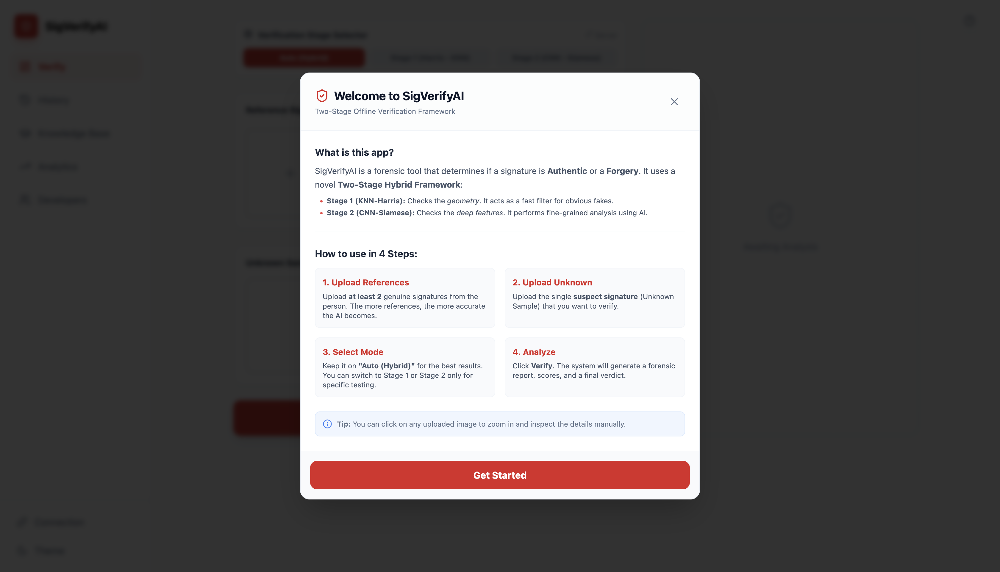
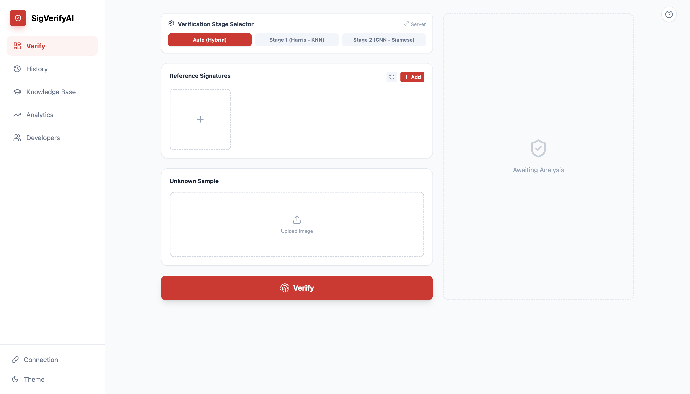
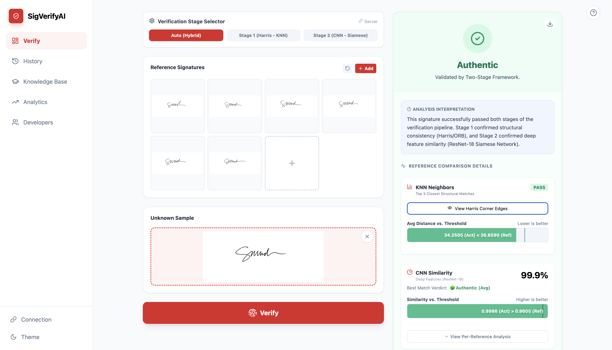

Two-Stage Offline Signature Verification System
A hybrid verification framework integrating a lightweight K-Nearest Neighbors (KNN) pre-filter with a ResNet-18 Siamese network to balance computational efficiency with high verification accuracy.
Sample Usage
For visitors who may not have sample signatures to test the live demo above, here is a visual walkthrough of the tool's verification process from upload to final verdict.

Step 1: Access the built-in documentation to understand the Two-Stage Hybrid Framework workflow.

Step 2: Upload genuine reference samples and the unknown suspect signature into the system.

Step 3: Review the Stage 1 structural distance evaluation and the Stage 2 deep learning similarity score to determine authenticity.
The Challenge
Offline systems need rich spatial representations to compensate for the absence of dynamic cues, which increases the challenge of distinguishing genuine signatures from skilled forgeries. While CNN-Siamese systems can be highly accurate, they are computationally demanding, especially when processing large sets of obvious random forgeries. Furthermore, relying on a single source dataset risks bias, often leading to models that memorize specific scanner artifacts rather than learning intrinsic signature properties.
The Solution
The study proposed a sequential pipeline comprising two distinct stages to optimize both accuracy and processing cost.
-
Stage 1: KNN-Harris Pre-filtering:
The first stage utilized a lightweight K-Nearest Neighbors (KNN) classifier using Harris Corner-seeded ORB histogram features to rapidly reject clear forgeries. The optimal configuration utilized 13 neighbors and the Canberra distance metric to filter obvious mismatches computationally efficiently.
$$d(p,q)=\sum_{i=1}^{n}\frac{|p_{i}-q_{i}|}{|p_{i}|+|q_{i}|}$$
-
Stage 2: CNN-Siamese Verification:
Signatures passing the initial filter were forwarded to a Convolutional Neural Network (CNN)-Siamese architecture based on a ResNet-18 backbone. This network was trained with triplet loss to perform fine-grained analysis, explicitly learning embeddings that cluster genuine signatures while separating forged ones.
$$\mathcal{L}(A,P,N)=max(0,||f(A)-f(P)||^{2}-||f(A)-f(N)||^{2}+\alpha)$$
- Robust Training & Deployment: To ensure generalization against domain shift, the model was trained on a merged dataset comprising CEDAR, GPDS Synthetic, ICDAR, UTSig, and a locally collected dataset of 60 participants. The system was deployed using a decoupled architecture: a React.js frontend hosted on GitHub Pages, and a Flask-based inference engine hosted on Hugging Face Spaces to manage the deep learning memory requirements.
The Impact
Following a Coarse-to-Fine optimization schedule evaluating baseline learning rates of 1×10⁻⁴ and 5×10⁻⁴, we optimized only the learning rate with a scheduler (Cosine Annealing with Warm Restarts), while the batch size was selected statically to maximize GPU capacity. The final model achieved significant biometric authentication benchmarks on the held-out test set:
- Recorded a 90.75% Accuracy against skilled forgeries across diverse ethnic scripts and handwriting styles.
- Achieved a 9.25% Equal Error Rate (EER) and a low False Acceptance Rate (FAR) of 8.70%.
- Secured an Area Under the Curve (AUC) of 0.9649 , indicating excellent mathematical separation between genuine and forged classes.
- Successfully demonstrated that a hybrid architecture can harmonize computational efficiency with forensic rigor, offering a viable solution for resource-constrained deployment.
Want the details?
Happy to walk through the architecture, the math, or the trade-offs.
Start a conversation ↗ ← All projects